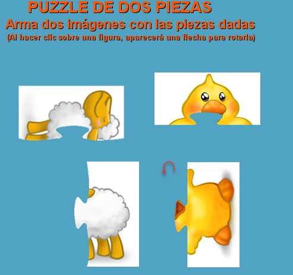

Descripción: Los
puzzles adecuados para los niños y niñas de tres y cuatro años deben tener
pocas piezas, que trate de encajar dos formas diferentes apoyándose en
su contorno, de líneas rectas o de curvas muy sencillas.
Procedencia: Construcción propia.
Fuente: GAMAR |
 |